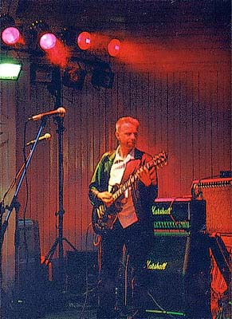
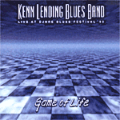
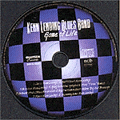

 |
КОНКУРС БЛЮЗ-РУНа память о первом московском международном блюзовом фестивале"BLUESSUMMIT-2000" |
 |
Разыгрываем два приза: концертные записи одного из участников фестиваля, датской группы "Kenn LENDING Blues Band" - CD "Game Of Life". |
 |
Хочется, чтобы призы достались:
а. Завсегдатаям сайта "Блюз в России"
б. Тем, кто трудовым рублем поддержал фестиваль и поддерживает наш клубный блюз… то есть, тем, кому не трудно будет узнать этих музыкантов в лицо.
Вопросы выбраны не самые легкие... Но кто сказал, что ответы будут судить строго?..
Победит приславший наибольшее количество правильных ответов, имя его будет прославлено "Блюзом в России" и ему будет вручен фирменный компакт с записью выступления датского блюзбэнда Кенни Лендинга на Джурском блюзовом фестивале.
Ваши ответы ждут по адресу: blues@rinet.ru